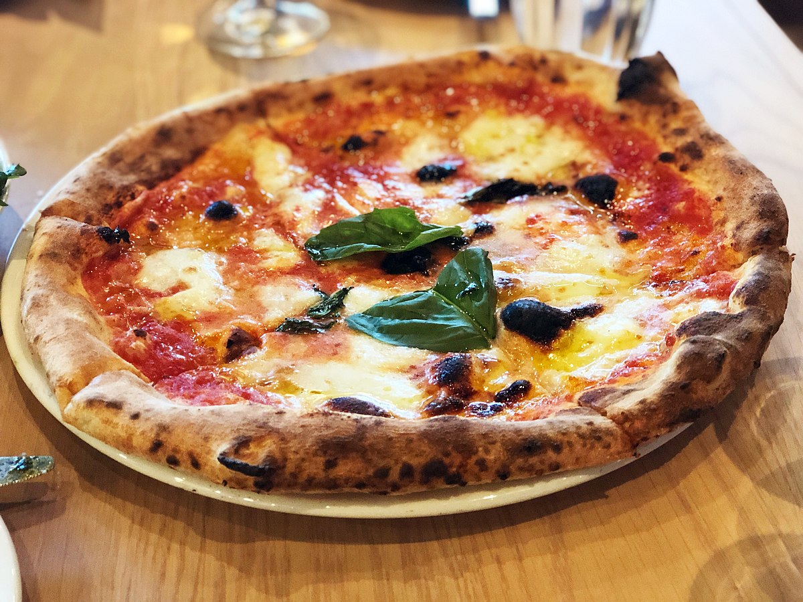

Pizza

A napolitania classic and favourite among the locals.
Thou simple in ingredients it packs a punch in taste.
Ingredients
- Pizza Base
- Mozzarella Cheese
- Salami
- Pizza Sauce
- Bacon
Steps
- Start charcoal fire or preheat gas grill to medium-high heat.
- Combine 2 cups flour, undissolved yeast, sugar and salt in a large bowl.
Add very warm water and oil; mix until well blended,
about 1 minute. Gradually add enough flour to make a soft dough.
Dough should form a ball and will be slightly sticky. Knead** on a floured surface,
adding additional flour if necessary, until smooth and elastic but not sticky, about 5 minutes.
- Divide dough into 8 portions. Pat or roll dough on a well-floured counter to about 8-inch circles;
they do not need to be perfect.
- Brush both sides of crust with additional oil. Using hands, lift each crust carefully and place on grill.
Cook for 3 to 4 minutes until bottom is lightly browned and top looks set.
Using long handled tongs, remove crust from grill, grilled side up, to a platter or baking sheet.
- Lightly add sauce and top the grilled side of each pizza crust.
Excess sauce or toppings makes the pizza hard to handle.
Repeat with remaining pizzas.
- Carefully slide each pizza onto the grill. Cook an additional 3 to 4 minutes
until bottom of crust is browned and cheese is melted.
Remove from grill and serve immediately.